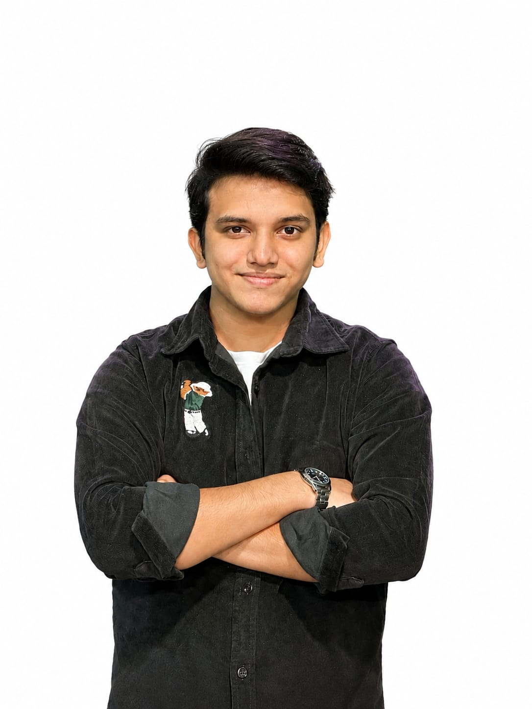

18, based in Delhi. I just finished school and I'm looking for my first internship — somewhere I can learn fast, build real things, and grow into a tech or design role.

I just finished school and I'm at the start of my career — which means I don't have a long resume yet, but I do have a genuine curiosity about how things are built, both visually and technically. I'm drawn to roles where design and tech overlap: building interfaces, not just designing or coding in isolation.
I learn quickly, I'm comfortable picking up new tools on my own, and I'd rather be honest about being early in my journey than pretend otherwise. What I bring is energy, curiosity, and a real willingness to put in the work.
I like understanding how websites and apps work under the hood, even the small details most people skip past.
Good design feels invisible. I'm interested in what makes something easy and pleasant to use.
Most of what I know, I picked up on my own — tutorials, trial and error, and a lot of patience.
Delhi, India — exploring opportunities in tech and design before / alongside further studies.
I'm looking for an entry-level internship in tech or design where I can learn from people who've already done the work I want to do. I don't expect to walk in knowing everything — I'm looking for a team that's willing to teach, and in return, I'll show up consistent, curious, and genuinely eager to contribute.
If you're hiring for an internship, or just want to chat — I'd love to hear from you.